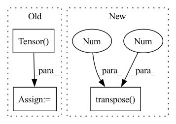

Pattern ID :15130
Before Change
track.chunk_start = start
track.chunk_duration = duration
target = track.targets[self.target].audio.transpose(1, 0)
target = torch.Tensor( target) .float()
if self._is_active(target, threshold=self.threshold):
data = {After Change
for songID, track in enumerate(self.mus.tracks):
if set(self.sources) == set(__sources__):
mixture = track.audio.transpose(1 , 0 )
else:
sources = []
for _source in self.sources:
sources.append(track.targets[_source].audio.transpose(1, 0)[np.newaxis])In pattern: SUPERPATTERN
Frequency: 3
Non-data size: 3
Instances Fragment ID: 51324879
Project Name: tky823/dnn-based_source_separation
Commit Name: b7a22e8f24f8206fc28ef8b7f01f01fcce0a498c
Time: 2021-08-10
Author: 40362510+tky823@users.noreply.github.com
File Name: egs/musdb18/conv-tasnet/src/adhoc_dataset.py
M Class Name: WaveTrainDataset
N Class Name: WaveTrainDataset
M Method Name: __init__(8)
N Method Name: __init__(8)
M Parent Class: WaveDataset
N Parent Class: WaveDataset
M File Name: egs/musdb18/conv-tasnet/src/adhoc_dataset.py
N File Name: egs/musdb18/conv-tasnet/src/adhoc_dataset.py
M Start Line: 91
M End Line: 117
N Start Line: 83
N End Line: 98
Before Change
encoded_texts=encoded_texts.detach(),
tgt_nonpadding=target_non_padding_mask)
else:
glow_loss = torch.Tensor( [0.0])
if not is_inference:
return before_outs, after_outs, predicted_durations, pitch_predictions, energy_predictions, kl_loss, glow_loss
After Change
else:
target_non_padding_mask = None
before_outs = self.decoder(encoded_texts, nonpadding=target_non_padding_mask).transpose(1, 2)
before_outs = self.out_proj(before_outs).transpose(1 , 2 )
after_outs = None
// forward flow post-net Fragment ID: 51324886
Project Name: digitalphonetics/ims-toucan
Commit Name: 25d5dd64db2eb9b9512b343ad11ef047c1fe09cc
Time: 2022-12-27
Author: lux.florian@gmail.com
File Name: TrainingInterfaces/Text_to_Spectrogram/PortaSpeech/PortaSpeech.py
M Class Name: PortaSpeech
N Class Name: PortaSpeech
M Method Name: _forward(12)
N Method Name: _forward(14)
M Parent Class: torch.nn.Module,ABC
N Parent Class: torch.nn.Module,ABC
M File Name: TrainingInterfaces/Text_to_Spectrogram/PortaSpeech/PortaSpeech.py
N File Name: TrainingInterfaces/Text_to_Spectrogram/PortaSpeech/PortaSpeech.py
M Start Line: 285
M End Line: 373
N Start Line: 327
N End Line: 351
Before Change
Xs = stft(wavs.data.cpu().numpy(), n_fft=1024, hop_length=512)
Xs = np.log(1 + np.abs(Xs))
Xs = torch.Tensor( Xs) .float().to(self.device)
// Concatenate labels (due to data augmentation)
if stage == sb.Stage.TRAIN and False:After Change
X_stft = self.modules.compute_stft(wavs)
X_stft_power = sb.processing.features.spectral_magnitude(X_stft, power=self.hparams.spec_mag_power)
X_stft_logpower = torch.log(X_stft_power + 1).transpose(1 , 2 )
// Concatenate labels (due to data augmentation)
if stage == sb.Stage.TRAIN and False:
classid = torch.cat([classid] * self.n_augment, dim=0) Fragment ID: 51324882
Project Name: speechbrain/speechbrain
Commit Name: 5141f8cfe46029b6dd2c051199291f4c21cae8e0
Time: 2022-11-20
Author: me@francescopaissan.it
File Name: recipes/ESC50/classification/train_interpreter.py
M Class Name: InterpreterESC50Brain
N Class Name: InterpreterESC50Brain
M Method Name: compute_objectives(4)
N Method Name: compute_objectives(4)
M Parent Class: sb.core.Brain
N Parent Class: sb.core.Brain
M File Name: recipes/ESC50/classification/train_interpreter.py
N File Name: recipes/ESC50/classification/train_interpreter.py
M Start Line: 147
M End Line: 173
N Start Line: 150
N End Line: 171